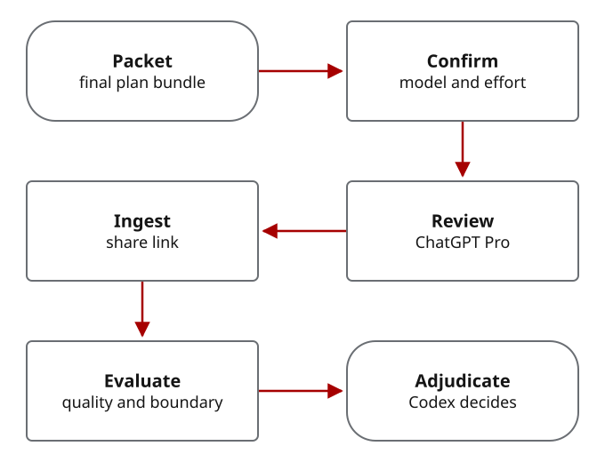

Agree what may be shared
First size the work with the prompt coach. Create an outside-review task only after the user has approved both the provider and the sharing boundary.
Ask before any project context is sent to the outside reviewer. Name the provider, the question and exactly what it may receive:
Should this project use an outside model for this review? If yes, may it receive only a brief with sensitive details removed, read selected repository material, or work on a separate patch branch? No outside sharing is the default.
Default to no outside sharing. Model preference alone is not consent to export repo state, private context, secrets, or unreleased material.
Keep outside assignments separate from normal tasks
Give each outside reviewer a separate Beads task. Guard labels keep ordinary Codex workers from claiming that task. One job-description label names the review discipline, such as security, architecture or documentation.
Operator reference: guard labels
contractor-only
no-codex-exec
contract-jd-security-reasoningUse exactly one primary job-description label. Split the work into separate Beads when a security review, docs review, and architecture critique all need independent reasoning.
Contract Beads should also populate native
skills, acceptance,
design, and notes fields. Avoid
literal \n text in multiline fields; use a heredoc
or file-backed input when creating contracts by hand.
Build and check the brief before sending it
The lead is usually the coordinating Codex agent. It may accept routine results only within your granted authority. Decisions reserved to you, or requiring human adjudication under the task or policy, stay with a human. The agent can prepare evidence and record that decision; it cannot approve it for you.
A contractor packet is the brief CWO prepares for an outside model: the assigned question, allowed material, selected snippets, provider identity and discipline-specific instructions.
Build it with the helper, then inspect the result. The helper checks sharing approval, permitted artifacts, snippets, provider identity and packet integrity before rendering a prompt. These checks do not replace your review for sensitive material.
For repo-readonly and patch-branch modes,
the packet only projects each first-level bead dependency to
id, title, status, and
dependency_type; missing scalar values become JSON
null, while nested dependency details and nonselected
fields are omitted. The full canonical summary is capped at 32 KiB
(32,768 UTF-8 bytes), and malformed or oversized summaries fail
before quota reservation, audit output, or packet output.
Packet validation rechecks both this projected shape and the size cap
independently; redacted packets are unchanged.
For an outside assignment, complete the packet-building and dispatch steps below before handing a prompt to a CLI. Use the specialist guide if you have not yet chosen between native, internal and outside review.
agy -p is the local CLI surface for the
gemini_architecture_critic executor key. For a
redacted-packet review, run CLIs from a neutral directory unless
the tool is proven unable to inspect the current repository. If a
return uses unapproved repo context, treat that evidence as
invalid until the architect adjudicates it.
Operator Reference: Building Packets
Use these commands to build packets for specific review lanes. This operator reference intentionally shows executor IDs and job-description labels.
Security review packet:
python3 scripts/build_contractor_packet.py \
--contractor-packet contractor-packet.json \
--executor external_security_reviewer \
--share-boundary redacted-packet \
--external-ok \
--attest-packet \
--format json \
--output contractor-packet.json
Architect-design critique packets: Second
opinions use the architecture reasoning label and dedicated
critic executors. Claude Opus 4.6 uses the Claude CLI with
--effort high as the floor, while Gemini 3.1 Pro
Preview uses Antigravity. When both are requested, create one
contractor-only Bead per critic from the same Codex architect
proposal. Treat returns as critique evidence for Codex
architect adjudication.
python3 scripts/build_contractor_packet.py \
--bead <claude-critic-bead> \
--executor claude_architecture_critic \
--share-boundary redacted-packet \
--external-ok \
--job-description contract-jd-architecture-reasoning \
--attest-packet \
--format json \
--output claude-architect-critique-packet.json
python3 scripts/dispatch_work.py \
--packet claude-architect-critique-packet.json \
--mode manual \
> claude-architect-critique-dispatch-prompt.md
claude --model claude-opus-4-6 --effort high \
-p "Read claude-architect-critique-dispatch-prompt.md and output only the contractor return template." \
> claude-architect-critique-return.mdpython3 scripts/build_contractor_packet.py \
--bead <gemini-critic-bead> \
--executor gemini_architecture_critic \
--share-boundary redacted-packet \
--external-ok \
--job-description contract-jd-architecture-reasoning \
--attest-packet \
--format json \
--output architect-critique-packet.jsonWeb-design packet (patch-branch): Repo-readonly and patch-branch handoff packets require an explicit disclosure escalation flag in addition to external opt-in.
python3 scripts/build_contractor_packet.py \
--contractor-packet contractor-packet.json \
--executor gemini_manual_reviewer \
--share-boundary patch-branch \
--allow-disclosure-escalation \
--external-ok \
--job-description contract-jd-domain-web-design \
--allowed-file docs/index.html \
--allowed-file docs/styles.css \
--format json \
--output contractor-packet.jsonGive each reviewer the same question independently
For a consequential design, you may want separate critiques of the same initial plan. Create one task and one approved brief per requested reviewer, preserve their independent findings, then have the lead decide what changes. Any further review of the amended plan must address a defined need and have its own permission and allowance; it is not an automatic extra call.
- Create one Beads task per outside reviewer.
- Build one approved, redacted brief per reviewer after explicit sharing approval.
- Record the dispatch ID and packet hash before parsing any return.
- Reject or quarantine returns that claim unapproved repo inspection or command execution.
- Let the Codex architect accept, modify, defer, reject, or quarantine each finding.
See how reviews are combined, how explicit claims are compared and the retry-design example. The runnable retry exercise shows a smaller authored test. Exact executor IDs and commands follow below.
See separate reviewer assignments, checked returns and one lead decision.
Review the final plan before implementation
Use the evaluated second opinions to amend the plan first. If a final readiness review is required, give the selected reviewer the revised plan, dependencies, permitted changes, validation steps and unresolved questions. A list of task titles alone is not enough.

Required reviewer gate: a review explicitly required before implementation remains blocking. If the named model, effort, approved route or required return evidence cannot be confirmed, record the problem and stop the dependent implementation. Only an explicit operator decision may change that requirement; do not silently substitute another model or skip the review.
Capture the answer with its assignment identity, model confirmation and source record. Evaluate the evidence, complete any required peer review and let the lead record what changes. The reviewer cannot operate Beads, approve a release or gain implementation authority.
See how second opinions change a work plan. Browser-plugin instructions are deferred; this guide does not provide a browser setup or submission procedure.
Check the return before using its findings
A return is the reviewer’s answer and supporting evidence. Normalize it into the required record format, evaluate its evidence and whether it stayed within the allowed material and actions, and record the lead’s decision. The reviewer must use the exact answer template, without narrating internal actions. The workspace mutation guard compares files before and after the call; it checks tracked files by default. Add --include-untracked to both guard commands when new files must also be checked.
python3 scripts/workspace_mutation_guard.py \
--snapshot \
--output before.json
agy -p "$(cat contractor-dispatch-prompt.md)" \
> contractor-return.md
python3 scripts/workspace_mutation_guard.py \
--compare before.json \
--output mutation-report.jsonpython3 scripts/normalize_contractor_return.py \
--bead <id> \
--file contractor-return.md \
--workspace-mutation-report mutation-report.json \
--output contractor-return-bundle.json
python3 scripts/evaluate_return.py \
--bead <id> \
--file contractor-return.md \
--workspace-mutation-report mutation-report.jsonResearch evidence, Research contradictions,
and Research reflection sections. The evaluator scores
source locators, citation spans or excerpts, reliability,
relevance, access limits, contradictions, and replan notes before
those claims can influence synthesis or implementation.
Before closing a meaningful contractor, evaluation, or adjudication Bead, add a closure-memory comment with who was involved, what changed, why it closed, how it was validated, when it closed, where it ran, decisions, evidence, residual risk, and follow-up. Keep the close reason terse so future agents can recover the decision trail from Beads without rereading the whole transcript.
What the historical contractor demo showed
The hello-world contractor demo is the concrete reference for manual outside dispatch. It used separate patch branches for Antigravity documentation work and Claude Code GitHub Pages work, then treated both returns as evidence for Codex review rather than direct authority.
Preparing a packet did not call a model: dispatch_work.py rendered a prompt for a separate operator-run CLI call. The demo also showed why returned work needs editing and validation before publication. Keep packet and return artifacts private by default; check public files for local paths, broken links, incorrect attribution and claims of tests that did not run.